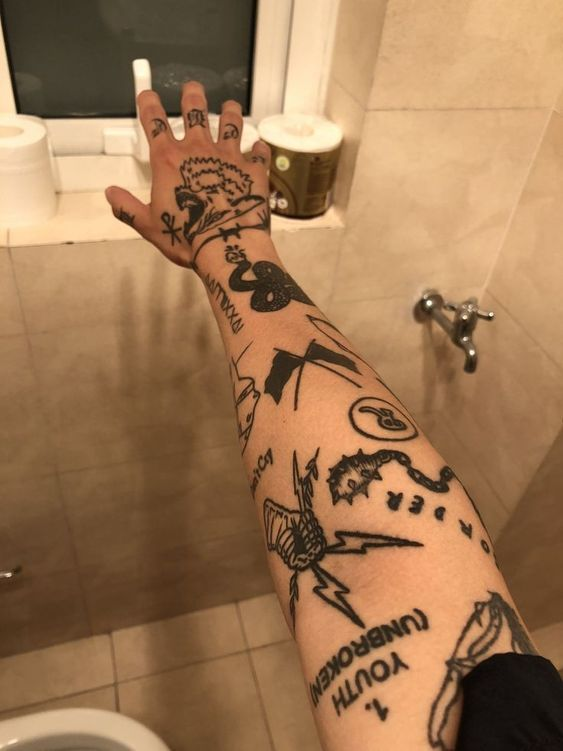

Uma tatuagem é uma forma de arte corporal que envolve a inserção de pigmentos na pele para criar desenhos permanentes. O processo de fazer uma tatuagem geralmente envolve várias etapas, e aqui está uma descrição geral do procedimento:
Cicatrização: Durante as próximas semanas, a tatuagem passa pelo processo de cicatrização. Durante esse período, é importante seguir as orientações fornecidas pelo tatuador para garantir uma cicatrização adequada e preservar a qualidade da tatuagem.
Lembrando que é fundamental escolher um estúdio de tatuagem confiável e profissional para garantir a segurança e a qualidade do processo. O uso de materiais esterilizados, agulhas descartáveis e práticas higiênicas são aspectos essenciais para prevenir infecções e garantir uma tatuagem bem-sucedida.


Rua Futuro Dev, N: 1914, Vila Angelão - Ibitinga - SP